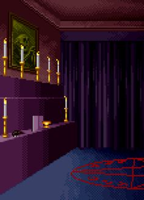

Mistérios da Mansão Esquecida

Mesmo assim, você continua sua jornada, determinado a desvendar os segredos finais da mansão e alcançar a verdadeira realização espiritual que tanto busca. O jogo termina com você no auge de sua influência na seita, mas com o destino final ainda envolto em mistério e incerteza